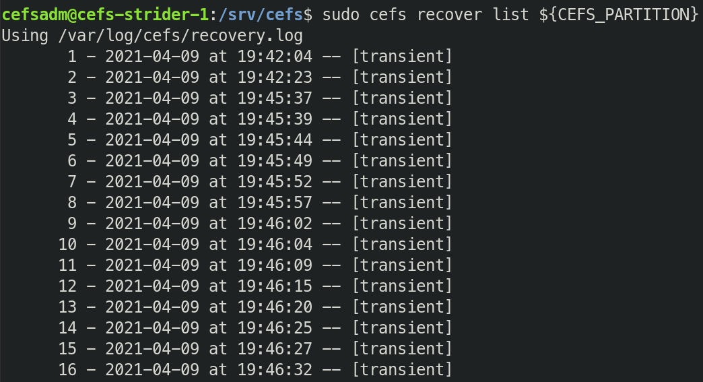
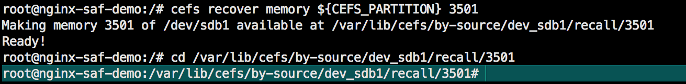

CEFS Test Instructions¶
This document is for CEFS version 2.0.0-beta+1000
System requirements¶
Server¶
Operating System |
Ubuntu Server 20.10 (64-bit only) |
|---|---|
Hardware OR Virtual Machine |
|
Windows Network (Optional)¶
Pre-request¶
Recommended that you install Samba on the server using:
apt install samba
You can use CEFS with Windows in a variety of ways. There are many configurations here, please choose the one that works for your particular use-case.
Active Directory¶
When connecting CEFS server via SMB or NFSv4, please make sure that CEFS server is configured to be a domain member.
Installation & Tests¶
Install¶
Install CEFS. As per CEFS Installation.
Set the environment variables to point to the CEFS partition and mount directory.
export CEFS_PARTITION=/dev/sdb1 CEFS_MOUNTDIR=/srv/cefs
[OPTIONAL] Grab test data from https://saf.ai/downloads/beta/test-data
Now let’s create, destroy, recover, and analyze!
Create¶
On client side, navigate to CEFS directory.
cd ${CEFS_MOUNTDIR}
Copy or extract the test data in the directory. For example, if you grabbed 200.zip from https://saf.ai/downloads/beta/test-data, you can unzip it in the CEFS directory.
unzip 200.zipOnce your data is finished copying over, look at your CEFS server and list your recovery points using the below command:
cefs recover list ${CEFS_PARTITION}
This should look something like the following:
Important
You will notice that as the data copies in, the CEFS AI created various recovery points. You will also notice that the recovery points are marked as transient. These recovery points can be made into backups or permanent recovery points by recovering them.
To make a recovery point available, you will need to turn a transient recovery point into a permanent recovery point. There are three ways in which you can use this capability:
Set up a schedule based on time or number of recovery points done.
Warning
TODO: how to convert a checkpoint into a backup via schedule
Manually set back up points based on important events.
cefs recover ${CEFS_PARTITION} ${RECOVERY_ID}
Ask CEFS to set backup based on what it deems to be a major event.
Warning
TODO: how to set up conversion of a checkpoint into a backup AI intervention.
Destroy¶
Method 1:¶
Manually delete your files
Verify files are not available
Method 2:¶
Install ransomware of choice. Or download and install ours from ……
Warning
Procuring ransomware can be dangerous, only use trusted sources!
Verify that your files are no longer accessible.
Recover¶
Go into your CEFS server.
List your recovery points:
cefs recover list ${CEFS_PARTITION}
Choose a recovery point based on the recovery id.
Run recover command:
cefs recover ${CEFS_PARTITION} ${RECOVERY_ID}
A directory gets created with your recovered files and the recover command will display the path. Navigate to the directory to check the data. You can prefix the command with cd and surround the recover command with $() to navigate there quickly like so:
cefs recover memory ${CEFS_PARTITION} {RECOVERY_ID}
This should look something like the following:
Copy over what you wish to restore to “production”.
Important
Notice that, not only has your data been restored but also your permissions and settings.
Analyze¶
You may go into your created recovery point files and analyze how your data looks at a certain point in time.
You may also compare the differences between pre and post attacked data to determine what files were being targeted.
You will notice that the restored data has no traces of the payload. Restoring your data with sāf.ai is like turning back the clock. It does not fix the damaged data it simply removes it from production and gives you back your healthy data.